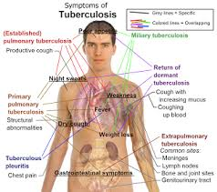

Definition
Typhoid fever is a bacterial disease, caused by Salmonella typhi,spread through contact with food or water contaminated by fecal matter or sewage.
Case-fatality rates of 10% can be reduced to less than 1% with appropriate antibiotic therapy.
victims exhibit sustained high fevers; left untreated, mortality rates can reach 20% Paratyphoid fever can be caused by any of three serotypes of S. paratyphi A, B and C. It is similar in its symptoms to typhoid fever, but tends to be milder, with a lower fatality rate.
Symptoms
Symptoms usually develop 1 to 3 weeks after exposure, and may be mild or severe.
- The sudden onset of sustained fever
- Malaise
- Nausea
- Severe headache
- Constipation or sometimes diarrhea
- Loss of appetite
- Rose-colored spots on the chest
- Enlarged spleen and liver
- Mental dullness and meningitis (in a severe case)
Prevention
- Keeping a clean environment
- Sanitation and hygiene are the critical measures that can be taken to prevent typhoid
- Careful food preparation and washing of hands are crucial
- Avoid raw fruits and vegetables.
- Choose hot foods.
- Two vaccines are available.
- One is injected in a single dose about two weeks before exposure.
- One is given orally in four capsules, with one capsule to be taken every other day
Pictures
Symptoms

Treatment
Typhoid fever can be treated with antibiotics. However, resistance to common antimicrobials is widespread.
Healthy carriers should be excluded from handling food.